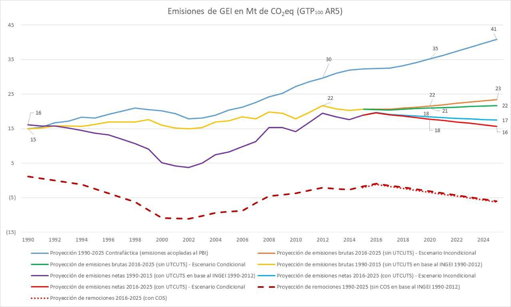
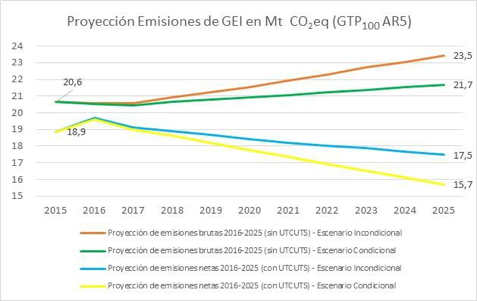
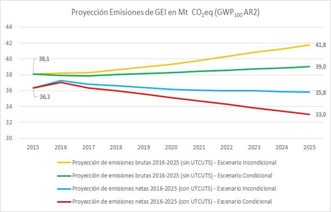

La presente Primera Contribución Determinada a nivel Nacional fue aprobada por Decreto del Poder Ejecutivo Número 310 del 3 de noviembre de 2017, en el marco del Acuerdo de París, que fuera ratificado por la República Oriental del Uruguay el 19 de octubre de 2016.
La Contribución Determinada a nivel Nacional (en adelante; CDN), tiene como objeto atender las disposiciones establecidas en el Acuerdo de París, así como también promover la adaptación y mitigación en Uruguay ante el desafío del cambio climático bajo la Política Nacional de Cambio Climático de manera de contribuir al desarrollo sostenible del país, con una perspectiva global, de equidad intra e intergeneracional y de derechos humanos, procurando una sociedad más resiliente, menos vulnerable, con mayor capacidad de adaptación al cambio y a la variabilidad climática, y más consciente y responsable ante el desafío del cambio climático, promoviendo una economía de bajas emisiones de carbono, a partir de proceso productivos y servicios sostenibles ambiental, social y económicamente, e incorporando conocimiento e innovación.
La CDN de Uruguay se compone de las siguientes secciones: en la sección primera se presentan los objetivos para mitigar el cambio climático; en la sección segunda, se presenta el contexto y principales medidas que aportan al alcance de los objetivos de mitigación; en la sección tercera se presentan el contexto y principales medidas de adaptación a los efectos adversos del cambio climático (sección que debe ser considerada la primera Comunicación de Adaptación); en la sección cuarta, se presentan el contexto y principales medidas de fortalecimiento de las capacidades y generación de conocimiento sobre cambio climático; en la quinta y última sección, se incluye Información para dar transparencia y mejorar la comprensión de los objetivos de mitigación y facilitar el seguimiento de su progreso.
De acuerdo con el Párrafo 23 de la Política Nacional de Cambio Climático (en adelante PNCC), la CDN sirve como instrumento de implementación de dicha Política, y fue preparada en el marco del Sistema Nacional de Respuesta al Cambio Climático y variabilidad (en adelante; SNRCC), incluida su consideración en consulta pública entre el 24 de agosto y 24 de septiembre de 2017. La versión revisada luego de la consulta pública fue considerada por el Gabinete Nacional Ambiental entre el 12 y el 18 de octubre de 2017.
La presente CDN está en concordancia con los siguientes instrumentos internacionales y nacionales: la Convención Marco de Naciones Unidas sobre el Cambio Climático (en adelante; Convención), ratificada por Uruguay el 18 de agosto de 1994 y aprobada por Ley Número 16.517 del 22 de julio de 1994; el Acuerdo de París, ratificado por Uruguay el 19 de octubre de 2016 y aprobado por Ley Número 19.439 del 17 de octubre de 2016; la Agenda 2030 para el Desarrollo Sostenible, incluidos los Objetivos de Desarrollo Sostenible, adoptada por Resolución 70/1 de la Asamblea General de las Naciones Unidas el 25 de septiembre de 2015; la Ley General de Protección del Ambiente, ley número 17.283 del 28 de diciembre del 2000; la Política Nacional de Cambio Climático (en adelante; PNCC); el Plan Nacional de Respuesta al Cambio Climático, adoptado por el Grupo de Coordinación del Sistema Nacional de Respuesta al Cambio Climático en enero de 2010, y; la Constitución de la República y las siguientes leyes nacionales: Decreto Ley número 15.239, de fecha 23 de diciembre de 1981, sobre el Uso y Conservación de los Suelos y de las Aguas Superficiales destinados a fines agropecuarios; Ley número 15.939, de fecha 28 de diciembre de 1987, sobre Fondo Forestal-Recursos Naturales; Ley número 17.234, de fecha 22 de febrero de 2000, sobre creación y gestión del Sistema Nacional de Áreas Naturales Protegidas; Ley número 18.610, de fecha 2 de octubre de 2009, sobre Política Nacional de Aguas; Ley número 18.195, de fecha 14 de noviembre de 2007, sobre Fomento y regulación de la producción, comercialización y utilización de agrocombustibles; Ley número 18.308, de fecha 18 de junio de 2008, sobre Ordenamiento Territorial y Desarrollo Sostenible; Ley número 18.597, de fecha 21 de septiembre de 2009, sobre Uso Eficiente de la Energía; Ley número 18.621, de fecha 25 de octubre de 2009, referida a la creación del Sistema Nacional de Emergencias Público y Permanente; Ley número 19.158, de fecha 25 de octubre de 2013, sobre la creación del Instituto Uruguayo de Meteorología (INUMET); Ley número 19.272, de fecha 18 de septiembre de 2014, referida a la descentralización y participación ciudadana y el artículo 33 de la Ley número 19.355, de fecha 19 de diciembre de 2015, sobre la creación de la Secretaría Nacional de Ambiente, Agua y Cambio Climático.
A continuación se presentan los objetivos de Uruguay para mitigar el cambio climático hacia el 2025. Estos objetivos se entienden justos y ambiciosos considerando que Uruguay es un país en desarrollo, las particularidades de sus emisiones de Gases de Efecto Invernadero (en adelante; GEI), que en su mayoría provienen de la producción de alimentos, la participación del país en las emisiones mundiales (0,05% de las emisiones mundiales)1 y así como también de su participación histórica.
Los objetivos de mitigación se establecen asumiendo que no existirán cambios estructurales en la matriz productiva del país y considerando las proyecciones oficiales de crecimiento económico en el período 2017-2025.
cubren el 99.4% de las emisiones de GEI del Inventario Nacional de Emisiones de GEI 2012 (en adelante; INGEI 2012), según métrica GWP100 AR2:
|
GEI |
Objetivos de Mitigación a 2025 |
Sectores del INGEI (sin incluir UTCUTS) |
|
|
Reducción de intensidad (emisiones de GEI por unidad de PBI) con respecto a 1990 |
|||
|
Incondicional |
Condicional a medios de implementación adicionales específicos |
||
|
CO2 |
Reducir 24% la intensidad de emisiones de CO2 por unidad de PBI |
Reducir 29% la intensidad de emisiones de CO2 por unidad de PBI |
Energía, incluido el Transporte; y Procesos Industriales 22.2% de las emisiones de GEI INGEI2012 en GWP100 AR2 |
|
CH4 |
Reducir 57% la intensidad de emisiones de CH4 por unidad de PBI |
Reducir 59% la intensidad de emisiones de CH4 por unidad de PBI |
Energía; Agricultura, incluida la Ganadería; Residuos; y Procesos Industriales 43.2% de las emisiones de GEI INGEI 2012 en GWP100 AR2 |
|
N2O |
Reducir 48% la intensidad de emisiones de N2O por unidad de PBI |
Reducir 52% la intensidad de emisiones de N2O por unidad de PBI |
Energía; Agricultura, incluida la Ganadería; Residuos; y Procesos Industriales 34.0% de las emisiones de GEI INGEI 2012 en GWP100 AR2 |
cubren el 51.1% de las emisiones de GEI (GWP 100 AR2) para el INGEI 2012:
|
GEI |
Objetivos de Mitigación a 2025 |
Actividad de Producción de Alimentos |
|
|
Reducción de intensidad (emisiones de GEI por unidad de producto) con respecto a 1990 |
|||
|
Incondicional |
Condicional a medios de implementación adicionales específicos |
||
|
CH4 |
Reducir 32% la intensidad de emisiones de CH4 por unidad de producto (kg de carne vacuna en peso vivo) |
Reducir 37% la intensidad de emisiones de CH4 por unidad de producto (kg de carne vacuna en peso vivo) |
Producción de carne vacuna 33.6% de las emisiones de GEI INGEI 2012 en GWP100 AR2 |
|
N2O |
Reducir 34% la intensidad de emisiones de N2O por unidad de producto (kg de carne vacuna en peso vivo) |
Reducir 38% la intensidad de emisiones de N2O por unidad de producto (kg de carne vacuna en peso vivo) |
Producción de carne vacuna 17.5% de las emisiones de GEI INGEI 2012 en GWP100 AR2 |
El Sector Uso de la Tierra, Cambio de Uso de la Tierra y Silvicultura (UTCUTS) presentó remociones netas en los INGEIs entre 1998 y 2012.
|
GEI |
Pools de carbono / Categorías de uso del suelo |
Objetivos de Mitigación a 2025 |
|
|
Mantenimiento de stocks |
|||
|
Incondicional |
Condicional a medios de implementación adicionales específicos |
||
|
CO2 |
Biomasa viva en Tierras Forestales |
Mantener el 100% de la superficie de bosque nativo del año 2012 (849.960 ha) |
Aumentar en 5% la superficie de bosque nativo del año 2012 (892.458 ha) |
|
Al menos mantener el 100% de la cantidad de superficie efectiva en manejo de plantaciones forestales, del año 2015 (763.070 ha) |
-- |
||
|
Mantener el 100% de la superficie de plantaciones forestales con destino sombra y abrigo del año 2012 (77.790 ha) |
Aumentar en 25% la superficie de plantaciones forestales con destino sombra y abrigo del año 2012, incluyendo sistemas silvopastoriles, (97.338 ha) |
||
|
Carbono Orgánico en el Suelo (COS) en Pastizales, Turberas y Tierras de Cultivo |
Evitar las emisiones de CO2 del COS en el 10% de la superficie de pastizales (1.000.000 ha) |
Evitar las emisiones de CO2 del COS en el 30% de la superficie de pastizales (3.000.000 ha) |
|
|
Evitar las emisiones de CO2 del COS en el 50% de la superficie de turberas del año 2016 (4.183 ha) |
Evitar las emisiones de CO2 del COS en el 100% de la superficie de turberas del año 2016 (8.366 ha) |
||
|
Evitar las emisiones de CO2 del COS en el 75% de la superficie de cultivos bajo Planes de Uso y Manejo del Suelo del año 2016 (1.147.000 ha), así como secuestrar CO2 en el 25% de la superficie restante (383.000 ha) |
-- |
||
Uruguay presenta los objetivos globales para mitigar el cambio climático de su CDN al año 2025 en términos de intensidad en relación a su producto bruto interno y con respecto al año base 1990, así como también incluye objetivos específicos relacionados a la Producción de Alimentos (carne vacuna) y sobre el Uso de la Tierra, Cambio de Uso de la Tierra y Silvicultura (UTCUTS).
Se distinguen a su vez objetivos incondicionales y condicionales a medios de implementación adicionales específicos. Los objetivos cubren el 99.4% de las emisiones de GEI del Inventario Nacional de Emisiones de GEI 2012 (en adelante; INGEI 2012), según métrica GWP100 AR2; siendo el INGEI 2012 el último inventario disponible y presentado a la Convención.
Al analizar los objetivos de mitigación de la presente CDN, corresponde considerar que Uruguay es un país en desarrollo, con una economía que deberá seguir creciendo para generar mayores oportunidades a sus habitantes, continuar luchando contra la pobreza e indigencia, así como seguir construyendo un mayor nivel de equidad en su sociedad, y realizar esto en el tiempo con un menor impacto proporcional asociado en el sistema climático.
La contribución de Uruguay al objetivo último de la Convención y al objeto del Acuerdo de París, se centra entonces en poder desarrollarse con la menor intensidad posible de emisiones de GEI, “descarbonizando” su economía en el tiempo y a su vez adaptándose, mediante la reducción de su vulnerabilidad y el aumento de su resiliencia, realizando todo esto de un modo que no amenace la producción de alimentos.
Uruguay ha decidido presentar sus objetivos de contribución de mitigación detallados por gas, por la relevancia que la discusión sobre las métricas comunes2 tiene sobre la asignación de prioridades para las estrategias de mitigación del país, visto que el perfil de emisiones de Uruguay, está fuertemente condicionado por emisiones de GEI no-CO2. Esta decisión considera lo señalado por el Panel Intergubernamental para el Cambio Climático (en adelante; IPCC -por su sigla en inglés-) en 3 respecto a que “la métrica GWP no está directamente relacionada con un límite de temperatura, como el objetivo de los 2°C…, mientras que otras métricas… como la GTP puede ser más útil para este propósito”, por lo que el IPCC llama a profundizar el diálogo sobre las implicancias de las diferentes métricas y “definir métricas que puedan ser útiles para los usuarios y los tomadores de decisión”. Por otra parte, esta forma de presentación también considera que la Conferencia de las Partes actuando como reunión de las Partes del Acuerdo de París (en adelante: CMA –por su sigla en inglés) debe aprobar las métricas comunes evaluadas por el IPCC, para ser utilizadas en la contabilidad de emisiones y remociones de GEI de la CDN bajo el Acuerdo de París.
Los objetivos globales para mitigar el cambio climático contemplan a todos los sectores emisores en el INGEI 2012, tal como el Sector Energía (que representa el 95% de las emisiones de CO2), que incluye Transporte, el Sector Procesos Industriales, el Sector Agricultura (que representa el 93.4% de las emisiones de CH4 y el 98.7% de las emisiones de N2O), que incluye la Ganadería, y el Sector Residuos. Cabe destacar que en todos estos Sectores Uruguay ya ha avanzado en la reducción de intensidad de emisiones de GEI respecto al PBI, y en algunos casos ha demostrado reducciones absolutas, como lo es en la generación eléctrica y forestación.
El perfil de emisiones de Uruguay está fuertemente marcado por las emisiones relativas a la producción de alimentos: usando la métrica GWP100 AR2, el 73.8% de las emisiones totales según en el INGEI 2012 corresponden al sector agropecuario, cuyos dos tercios son originadas en la producción de carne vacuna. Es por lo anterior que Uruguay presenta un objetivo específico de intensidad de emisiones en relación a la unidad de producto, en este caso cantidad de carne vacuna producida (medida como kgs. en peso vivo del ganado vacuno de carne).
Uruguay presenta asimismo un conjunto de objetivos para el sector de UTCUTS. El país se ha propuesto conservar el stock de carbono existente en el monte nativo a través del mantenimiento de su área. Análogamente, respecto a las plantaciones forestales, se establece un área mínima forestal efectiva de manejo, que el país mantendrá más allá de las fluctuaciones del ciclo productivo forestal. El enfoque de establecer un objetivo sobre el stock permite asumir una contribución que pueda eventualmente representar una progresión con respecto a la previa CDN, en un sector que intrínsecamente tiene limitaciones sobre dicha progresión desde el enfoque tradicional de flujos. Asimismo se mantendrá el área de plantaciones forestales con destino abrigo y sombra, incluyendo sistemas silvopastoriles, con el objetivo de conservar el stock de carbono existente en dichas áreas. Por último se presentan objetivos respecto al mantenimiento del carbono orgánico del suelo; en el área de pastizales bajo buenas prácticas de manejo de tierras, en turberas y en el área agrícola que se encuentra bajo Planes de Uso y Manejo de Suelo, obligatorios por ley desde 2013 incluyendo captura en aquellos casos en que los cultivos se hacen en rotaciones con pasturas de ciclo largo.
Como fue mencionado, los objetivos presentados por Uruguay se establecen de manera incondicional y condicionada a los medios de implementación adicionales específicos que el país reciba, tanto vía financiamiento, como en transferencia y desarrollo de tecnologías y la generación de capacidades. Más adelante se presentan medidas de mitigación que el país prevé desarrollar condicionado al apoyo con que se cuente, así como una lista de las principales medidas de adaptación que deberá realizar en paralelo con aquellas de mitigación y promoviendo la sinergia entre ambas, en los casos que así corresponda. A su vez cabe destacar que el disponer de apoyo para llevar a cabo las medidas de adaptación resulta esencial para su completa implementación. Por último se indican medidas transversales relativas al conocimiento y al fortalecimiento de capacidades.
Uruguay procura un proceso de desarrollo sostenible, donde el crecimiento económico se desacopla de las emisiones de GEI. En este sentido, cabe destacar que durante los últimos 12 años (2005 – 2016), Uruguay ha crecido a una tasa promedio de 4,6% anual, período en el que la demanda de energía de su sector industrial se cuadriplicó y la producción de alimentos aumentó tres veces y media. Este crecimiento fue acompañado de una importante disminución de la pobreza, que se redujo del 39.9% al 9.4%, mientras que la pobreza extrema prácticamente desapareció, pasando del 4.7% al 0.2%, alcanzándose un índice de Gini 0.38. Las emisiones tuvieron un incremento acumulativo anual de un 0.8% entre 1990 y 2012 (último INGEI disponible, incluyendo UTCUTS y GWP 100 AR2).
El dinámico crecimiento del país pudo llevarse adelante entonces reduciendo la intensidad de emisiones de manera agregada en toda su economía e incluso disminuyendo emisiones absolutas en algunas actividades clave, como la generación eléctrica, principalmente gracias a la confluencia de políticas públicas nacionales relacionadas con el cambio climático, las políticas públicas sectoriales y departamentales, y así como también a las acciones del sector privado, la academia y la sociedad civil.
Todo esto se vio reforzado a partir de la construcción de la institucionalidad climática en el Sistema Nacional de Respuesta al Cambio Climático y variabilidad4 (en adelante: SNRCC) y la reciente creación del Sistema Nacional Ambiental; el Gabinete Nacional Ambiental; y la Secretaría Nacional de Ambiente, Agua y Cambio Climático; así como el desarrollo de instrumentos como el Plan Nacional de Respuesta al Cambio Climático en 2010 y la implementación de una serie de exitosas políticas sectoriales específicas. Estos esfuerzos confluyeron para la elaboración y reciente adopción en abril de 2017 de la Política Nacional de Cambio Climático, instrumento estratégico y programático bajo el cual se enmarca esta primera CND y las sucesivas CNDs a ser presentadas en ciclos de cinco años.
Como se ha mencionado, para contribuir a la implementación de un modelo de desarrollo sostenible que sea resiliente y bajo en carbono, Uruguay desplegó en los últimos años un conjunto muy ambicioso de medidas tempranas, especialmente en algunos sectores clave. Esto ocurrió gracias a un significativo volumen de inversiones promovidas por las políticas públicas. Por ejemplo, en el sector energético, la transformación de la matriz fue posible debido a una inversión público-privada acumulada durante varios años que alcanzó, en promedio, al 3% del PBI por año.
El Estado también contribuyó a la reducción de emisiones de la economía otorgando beneficios impositivos a inversiones productivas bajas en carbono, como en la forestación, sector en el que el subsidio alcanzó a la mitad de los costos de plantación durante casi 15 años y en proyectos de energías renovables bajo el régimen de promoción de inversiones. Asimismo, en el sector de ganadería de carne vacuna, en lechería y en producción de arroz, las políticas públicas acompañaron fuertes inversiones y cambios tecnológicos que permitieron un aumento de la productividad y la reducción de la intensidad de emisiones por unidad de producto.
La producción uruguaya y el crecimiento económico mencionado se vieron fortalecidos por el aumento de la producción agroindustrial, en la que se origina el 70% de las exportaciones (y a través de la que Uruguay produce hoy alimentos para 28 millones de habitantes), y así como también por el importante crecimiento de otras nuevas industrias y servicios, como la energía, el turismo y las nuevas tecnologías. Uruguay toma la oportunidad y el desafío de continuar ampliando sus niveles de producción de alimentos confiables y ambientalmente sostenibles ante una población creciente; así entiende el país su rol para contribuir a salvaguardar la seguridad alimentaria en línea con el Acuerdo de París.
A continuación se describe brevemente la evolución reciente de los sectores del INGEI a partir de las medidas de mitigación implementadas y en implementación, así como también los niveles de ambición al 2025 para cada una de los objetivos presentados en la sección anterior. Cabe destacar que además de las medidas de mitigación específicas implementadas y en implementación en los sectores emisores, el dinámico desempeño global de la economía, en sectores relativamente menos emisores, como los servicios y otras actividades que capturan como la forestación, han permitido el desacople entre el crecimiento económico y la emisiones de GEI.
Sobre las emisiones de CO2
De acuerdo al INGEI 2012, las emisiones de CO2, sin incluir el Sector UTCUTS, representan el 22% de las emisiones totales del INGEI (GWP100 AR2). Por otra parte las emisiones totales de CO2 en Uruguay se explicaron en un 95% (8.199 Gg) por el sector Energía, incluyendo Transporte, siendo el restante 5% (420 Gg) generado en el sector Procesos Industriales. En contrapartida, el sector UTCUTS capturó 2.126 Gg netos, por el aumento del área destinada a cultivos forestales.
En lo que respecta a las emisiones por la generación de energía corresponde mencionar que en el marco de la “Política Energética 2005-2030”, Uruguay ha hecho un gran esfuerzo para alcanzar una matriz energética limpia logrando que el 57% de la oferta primaria de energía sea renovable en 2015. Dicha participación alcanzó al 90% para el total de la energía consumida por el sector industrial y llegó al 92% para la generación eléctrica (Balance Energético Nacional 2015, Ministerio de Industria, Energía y Minería).
De acuerdo a la Ley de Agrocombustibles, se ha establecido el uso obligatorio de un mínimo de biodiesel y bioetanol (ambos de producción enteramente nacional) en las mezclas de gas oil y gasolina comercializados en el país para uso automotor. Por otra parte, las medidas tempranas en la descarbonización de la generación de energía eléctrica, dan la oportunidad de reducir emisiones en el sector transporte, que corresponden al 55% de las emisiones del Sector Energía en 2015, a través del desarrollo del transporte eléctrico. Así, con el objetivo de promover sistemas de movilidad sostenible, se han tomado medidas para la promoción de la electrificación, tanto en el transporte público de pasajeros (buses y taxis), como en vehículos utilitarios y particulares. En el mismo sentido, se considera la implementación de medidas orientadas a mejorar la gestión de la movilidad urbana, en particular aquellas dirigidas al transporte público de pasajeros que contribuyan a aumentar su utilización, y la promoción del transporte activo.
Gracias a las medidas tempranamente implementadas, las emisiones totales del sector energético del país en relación a su PBI son muy bajas respecto al promedio mundial. En 2015, la intensidad de emisiones del sector fue de 119 gCO2/USD, la tercera parte de la intensidad mundial5 e incluso muy por debajo del promedio de los países de la Organización para la Cooperación Económica y el Desarrollo (OCDE). La transformación estructural de la matriz de generación eléctrica permitirá en 2017 una reducción a la mitad de las emisiones absolutas respecto al 1990, a pesar de casi triplicarse el consumo eléctrico. Esta reducción se alcanzará gracias a la implementación de medidas que promueven la incorporación de energías renovables no tradicionales (eólica, fotovoltaica, residuos de biomasa) sumadas a la fuente hidráulica tradicional.
Además de las potentes medidas que favorecen la incorporación de energías renovables, Uruguay contribuirá a la reducción de emisiones mediante la implementación de medidas que promueven la eficiencia energética, tanto a nivel residencial, como industrial y en el transporte. En particular, el país se encuentra desarrollando normativas e incentivos que promueven la utilización de materiales de construcción que favorecen la eficiencia energética, así como también el uso de luminarias de menor consumo y modificaciones en el transporte público.
Este contexto habilita a Uruguay a contribuir a 2025 con un objetivo de mitigación incondicional de reducción de la intensidad (emisiones de CO2 por unidad de PBI) de un 24% respecto a los valores de 1990. Así como también permite aspirar a un objetivo de mitigación condicional a medios de implementación adicionales y específicos a 2025 de 29%.
Sobre las emisiones de CH4
De acuerdo al INGEI 2012, las emisiones de CH4 representan el 43% de las emisiones totales (GWP100 AR2). Por otra parte el 93% (746 Gg) de las emisiones totales de CH4 en Uruguay se generaron en el sector Agricultura, mientras que el sector Residuos explicó el 6% (47 Gg) de las emisiones y el sector Energía el restante 1% (6 Gg). Dentro del sector Agricultura, la producción de carne vacuna explicó el 83% (622 Gg), lo que significó el 78% de las emisiones totales de CH4.
Debido a la relevancia de las emisiones en la producción de carne vacuna, la particularidad de ser de origen biológico y el hecho de que el país, bajo el Acuerdo de París, debe mitigar el cambio climático de un modo que no amenace la producción de alimentos, el desafío nacional se concentra en la reducción de la intensidad de emisiones por unidad de producto y por ello Uruguay presenta un indicador específico.
En este sentido, corresponde mencionar que en los últimos 25 años Uruguay ha reducido de forma significativa la intensidad de emisiones en la producción de carne vacuna. Dicha evolución se explica por el aumento de la productividad estimulado por factores del contexto económico nacional e internacional, así como por la implementación de políticas públicas que apoyaron al sector privado en su proceso de adopción de tecnologías que mejoran, medidas que han sido reforzadas desde 2010 con la implementación de la Política Agropecuaria Clima-Inteligente. En particular, corresponde mencionar la implementación de medidas que buscan favorecer la adopción de tecnologías de gestión del forraje en las fases de cría y recría vacuna en base a pastizales naturales, así como medidas de manejo animal, que permiten aumentar la eficiencia en la producción de carne vacuna, al mismo tiempo que eliminan las pérdidas de carbono de los suelos y pueden aumentar sus stocks.
Dada la importancia de las emisiones de la ganadería vacuna en el total de las emisiones del país, es destacable que el aumento de la producción de carne del país se haya logrado hasta el presente con un aumento muy pequeño de las emisiones totales de este sector. A futuro, es posible plantearse el objetivo ambicioso de que las emisiones de metano y óxido nitroso se estabilicen o incluso desciendan en base a que los aumentos de productividad significarán aumento de la eficiencia del rodeo, y mejora de parámetros clave para controlar las emisiones, como mejora de la calidad media de la dieta en base a campo natural (más digestibilidad media) y reducción de la tasa de emisión de metano por unidad de alimento ingerida (Ym) en el orden de un 15%.
En lo que respecta a las restantes actividades agropecuarias que se incluyen dentro del sector Agricultura y que explicaron el 16% (128 Gg) de las emisiones totales de CH4 según el INGEI 2012, se destaca que éstas han disminuido en términos de intensidad (emisiones medidas en función del PBI) en los últimos 25 años gracias a la implementación de prácticas que mejoraron la productividad y de las políticas públicas mencionadas.
En el sector Residuos, la reducción relativa de emisiones ha sido acompañada por la implementación de medidas que habilitan la captura y quema de CH4 en rellenos sanitarios (en algún caso con generación de energía eléctrica) y cogeneración a partir de residuos agroindustriales y forestales, así como también por la promoción de sistemas de tratamiento de aguas residuales industriales que consideran la captación y quema de biogás en sistemas anaerobios.
Este contexto habilita a Uruguay a contribuir a 2025 con un objetivo de mitigación incondicional de reducción de la intensidad (emisiones de CH4 por unidad de PBI) de un 57% respecto a los valores de 1990. Así como también permite aspirar a un objetivo de mitigación condicional a medios de implementación adicionales y específicos a 2025 de 59%.
En lo que refiere a las emisiones generadas por la producción de carne vacuna, Uruguay podrá contribuir a 2025 con un objetivo de mitigación incondicional específica de reducción de la intensidad (emisiones de CH4 por unidad producida de carne vacuna medida en kg. en peso vivo) de un 32% respecto a los valores de 1990. Así como también permite aspirar a un objetivo de mitigación condicional a medios de implementación adicionales y específicos a 2025 de 37%.
Sobre las emisiones de N2O
De acuerdo al INGEI 2012, las emisiones de N2O representan el 34% de las emisiones totales (GWP100 AR2). Por otra parte el 98% (42 Gg) de las emisiones totales de N2O en Uruguay se generaron en el sector Agricultura, mientras que Energía explicó el 1% (0,4 Gg) de las emisiones y el sector Residuos el restante 0,6% (0,3 Gg). Dentro del sector Agricultura, la producción de carne vacuna explicó el 52% (22 Gg), lo que significó el 51% de las emisiones totales de N2O.
Por las mismas razones expuestas en relación a las emisiones de CH4 en el proceso de producción de carne vacuna los esfuerzos destinados a la mitigación de las emisiones de N2O generadas por esta actividad se han focalizado en la reducción de la intensidad de emisiones por kg de carne producida.
En lo que respecta a las restantes actividades agropecuarias que se incluyen dentro del sector Agricultura y que explicaron el 47% (20 Gg) de las emisiones totales de N2O según el INGEI 2012, éstas han disminuido en términos de intensidad (medido en función del PBI) debido al aumento de la productividad y al avance del cultivo de soja, que al ser una leguminosa requiere menor fertilización nitrogenada.
Este contexto habilita a Uruguay a contribuir a 2025 con un objetivo de mitigación incondicional de reducción de la intensidad (emisiones de N2O por unidad de PBI) de un 48% respecto a los valores de 1990. Así como también permite aspirar a un objetivo de mitigación condicional a medios de implementación adicionales y específicos a 2025 de 52%.
En lo que refiere a las emisiones generadas por la producción de carne vacuna, Uruguay podrá contribuir a 2025 con un objetivo de mitigación incondicional específica de reducción de la intensidad (emisiones de N2O por unidad producida de carne vacuna medido en kg de peso vivo) de un 34% respecto a los valores de 1990. Así como también permite aspirar a un objetivo de mitigación condicional a medios de implementación adicionales y específicos a 2025 de 38%.
Sobre la conservación del stock de CO2.
De acuerdo al INGEI 2012, el sector UTCUTS capturó 2.126 Gg netos de CO2 en biomasa viva. Dicha captura se explicó por el aumento del área de plantaciones forestales, por la estructura de edades y por los turnos de corta.
Bosque nativo:
El 4,8% del territorio nacional está cubierto por bosques nativos, cuya corta está prohibida por la Ley Forestal (salvo algunas excepciones especificadas en la Ley). Esto, sumado a la provisión de incentivos en la forma de renuncias fiscales a las áreas con bosque nativo registradas ante la Dirección General Forestal, ha permitido mantener la superficie de este ecosistema y permitirá alcanzar el objetivo incondicional establecido por Uruguay de mantener el 100% del área actual de bosque nativo. No obstante lo mencionado anteriormente, en los últimos años se han identificado procesos de degradación en los bosques nativos del país, problemática que será abordada a través de la Estrategia REDD+ que está siendo elaborada en Uruguay. Es así que, en el marco de esta Estrategia, se espera no sólo el aumento de stocks de carbono por la restauración de áreas degradadas, sino también identificar oportunidades de aumento de stocks por el incremento del área de bosque nativo. Esto explica el objetivo condicional que Uruguay ha definido para bosque nativo, es decir que con medios de implementación adicionales se espera contribuir con un aumento del 5% a 2025.
Plantaciones forestales:
El área de plantaciones forestales aumentó significativamente en Uruguay, como consecuencia de la aprobación e implementación de la Ley Forestal. Esto ha influido directamente en el inventario de GEI de Uruguay, representando las plantaciones forestales la mayor parte de las remociones de CO2 del sector UTCUTS. En este sentido para establecer su objetivo sobre plantaciones forestales se ha definido una cantidad mínima de área que permanecerá como superficie efectiva de manejo en las sucesivas CDNs, más allá de los ciclos de plantación, crecimiento y cosecha, manteniendo el 100% de la superficie efectiva de 2015 de 763.070 ha, que representan un stock de carbono de 32.153 Gg de C, que equivalen a alrededor de 117.894 Gg de CO2, y que corresponde a 3,3 años de emisión promedio de Uruguay entre 1990 y 2012 con la métrica GWP. Por otra parte para 2025 se estima un secuestro neto (emisiones menos remociones) de 2.853 Gg de CO2; comparado con el período 1990-1994, en el que no había secuestro, sino que se emitían en promedio 214 Gg, en este sentido el sector forestal refleja un sostenido aumento de los stocks de carbono en biomasa, que continuará ampliándose en la estimación a 2025. Por otra parte Uruguay está trabajando técnicamente para informar en los sucesivos INGEI el pool de carbono “productos de madera cosechada” que representaría más adecuadamente los flujos de emisión de la cosecha de las plantaciones forestales, que dependiendo de si su destino es papel o madera para la industria de transformación mecánica, se pueden considerar emisiones diferidas entre 2 y 35 años.
Plantaciones forestales con destino abrigo y sombra, incluyendo sistemas silvopastoriles:
Debido a la importancia de la producción ganadera en Uruguay, la superficie de plantaciones forestales con destino abrigo y sombra que acompañan esa producción y dan condiciones de bienestar a los animales tienen una gran relevancia en el país. Es por este motivo que Uruguay se plantea como objetivo incondicional mantener al 2025 el 100% de la superficie actual existente, conservando así el stock de carbono en dichas áreas. Asimismo, condicionado a medios de implementación adicionales, se plantea aumentar en casi 10.000 hectáreas la superficie de estas plantaciones para el ganado y en casi 10.000 hectáreas el área de sistemas silvopastoriles, lo que representará un secuestro adicional de 393 Gg de CO2 anuales.
Pastizales:
Se está promoviendo un cambio transformacional en el manejo del campo natural, a través de un nuevo paradigma que consiste en el ajuste de la oferta de forraje, manejo regenerativo y manejo de las entradas y salidas de nitrógeno. Es así que para 2025 Uruguay ha definido como objetivo incondicional contar con 1.000.000 de hectáreas de campo natural (10% del área de pastizales) manejadas bajo este nuevo paradigma, las que dejan de perder carbono orgánico del suelo y están en condiciones de secuestrar carbono. Con medios de implementación adicionales, el área de pastizales naturales manejada bajo este nuevo paradigma será de 3.000.000 de hectáreas (30% del área total de pastizales).
Uruguay dispone de insuficiente investigación sobre las tasas de secuestro de carbono en suelos al cambiar las prácticas de manejo de sus pastizales. Por ello ha optado por fijar un objetivo conservador a 2025 que implica que en los pastizales en los que se realizan los cambios de prácticas se deja de perder carbono. Se está trabajando en investigación para calibrar las herramientas que permitan reportar lo antes posible en el INGEI y al menos al momento de verificar los objetivos de la presente CDN, y con adecuada precisión, los cambios efectivos que hayan ocurrido en este “pool” de carbono.
Turberas:
La realización de un Inventario Nacional de Humedales para la identificación y delimitación de las diferentes categorías de humedales según las categorías de la Convención de Ramsar, ha mostrado que los humedales ocupan el 12% del área del territorio nacional (más de 2 millones de hectáreas). Dentro de dicha área, se han identificado 8.366 hectáreas de turberas que contienen carbono acumulado en la turba. No se cuenta en la actualidad con la caracterización necesaria para estimar el stock de carbono contenido en dicha área de turberas, para lo que se prevé la realización de investigaciones para obtener dicha cuantificación. El área de turberas identificada en Uruguay se encuentra principalmente dentro del sitio Ramsar Humedales del Este (que abarca más de 430 mil hectáreas). Por lo tanto, mediante las actividades que promueven la conservación y uso racional de humedales en el marco de la implementación de la Convención de Ramsar, Uruguay mantendrá al menos un 50% de la superficie de Turberas del país sin medios de implementación adicionales, y logrando llegar a un 100% en un escenario condicional, contando con mayores recursos para la gestión de la superficie.
Tierras de cultivos:
Se presenta un objetivo respecto al carbono orgánico del suelo: prácticamente toda (98%) el área agrícola de cereales y oleaginosos del país se encuentra bajo Planes de Uso y Manejo de Suelos, obligatorios por Ley desde 2013, que se basan en el uso de suelo por su capacidad de uso. Esto redundó, en términos promedio, en: 90% de la agricultura se realiza bajo siembra directa, no quedan suelos “desnudos” (sin rastrojos) -fundamentalmente en invierno- ya que los cultivos de invierno, de cobertura y de servicios, cubren el 98% del área de soja; aumentó a 30% aproximadamente el área que se realiza por año con gramíneas de verano C4 (sorgo y maíz) o que pasa a fase de pasturas. Estas prácticas de manejo son las que logran minimizar pérdidas y/o aumentar los stocks de COS. En ese sentido se establece que en un 75% del área agrícola se conserve el carbono orgánico del suelo y, de forma conservadora, en un 25% del área bajo rotaciones cultivos- pasturas sembradas se capture carbono orgánico en el suelo a una tasa estimada de 0,2ton/ha/año en los suelos.
A continuación se presenta un listado de medidas de mitigación del cambio climático que Uruguay está implementando e implementará de manera de aportar al logro de los objetivos incondicionales de mitigación establecidos en esta CDN:
|
Listado de las principales medidas de mitigación en implementación y a ser implementadas, que aportan al logro de los objetivos incondicionales de mitigación de la CDN de Uruguay. Se distingue con un (*) aquellas medidas que tienen efectos también sobre la adaptación. |
|
Sector Energía. (relativo al Párrafo 18 de la PNCC)
Sector Energía – Transporte. (relativo al Párrafo 17 de la PNCC)
Sector Agricultura - Producción de Carne Vacuna (relativo al Párrafo 16 de la PNCC)
Sector Agricultura: otras actividades. (relativo al Párrafo 16 de la PNCC)
Sector Uso de la Tierra, Cambio de Uso de la Tierra y Silvicultura. (relativo a los Párrafos 12 y 16 de la PNCC)
Sector Residuos. (relativo al Párrafo 21 de la PNCC)
Varios Sectores. (relativo al Párrafo 19 de la PNCC)
|
La Tabla anterior contiene un listado no exhaustivo de medidas cuantificables que se están llevando a cabo y que se prevén desarrollar en cada área y sector.
A continuación se presenta un listado de medidas de mitigación del cambio climático que Uruguay implementará de manera de aportar al logro de los objetivos condicionales de mitigación establecidos en esta CDN. La implementación de dichas medidas supone la provisión adicional y especifica de medios de implementación, incluidos el financiamiento público no reembolsable y/o concesional, la transferencia de tecnología y fortalecimiento de capacidades, a ser provistos por los países desarrollados.
|
Listado de las principales medidas a ser implementadas que aportan al logro de los objetivos de mitigación de Uruguay condicionales a medios de implementación adicionales específicos. Se distingue con un (*) aquellas medidas que tienen efectos también sobre la adaptación. |
|
Sector Energía. (relativo al Párrafo 18 de la PNCC)
Sector Energía – Transporte. (relativo al Párrafo 17 de la PNCC)
Sector Procesos Industriales. (relativo al Párrafo 20 de la PNCC)
Sector Agricultura - Producción de Carne Vacuna (relativo al Párrafo 16 de la PNCC)
Sector Agricultura – Otras actividades. (relativo al Párrafo 16 de la PNCC)
Sector Uso de la Tierra, Cambio de Uso de la Tierra y Silvicultura. (relativo a los Párrafos 12 y 16 de la PNCC)
Sector Residuos. (relativo al Párrafo 21 de la PNCC)
Varios Sectores. (relativo al Párrafo 19 de la PNCC)
|
La Tabla anterior contiene un listado no exhaustivo de medidas cuantificables que se prevén desarrollar en cada área y sector.
(Esta sección de la CDN debe ser considerada la primera Comunicación de la Adaptación de Uruguay bajo el Artículo 7.10 del Acuerdo de París)
El país ha reforzado en la última década las políticas públicas, programas y medidas específicas en materia de adaptación, enfocadas en diversos sectores y poblaciones, priorizando fortalecer el desarrollo de comunidades resilientes ante el cambio y la variabilidad climática y los eventos extremos, como base para la reducción de la vulnerabilidad con equidad e inclusión social.
En 2004 se consideró de interés ministerial el Programa de Medidas Generales de Mitigación y Adaptación, incluyendo medidas de adaptación en los sectores: agropecuario, biodiversidad, en salud y los recursos costeros, hídricos y pesqueros. En 2010 se adoptó por el Grupo de Coordinación del Sistema Nacional de Respuesta al Cambio Climático y variabilidad el Plan Nacional de Repuesta al Cambio Climático, que incluye un análisis de vulnerabilidad en la producción agropecuaria y ecosistemas terrestres, en el sector energético, para la zona costera, para el hábitat urbano y salud y para el sector industria y servicios, así como también se identificaron medidas de adaptación para los sectores: gestión integral del riesgo, recursos hídricos, energía, ecosistemas y biodiversidad, producción y consumo y calidad de vida de la población. También en 2012 se adoptó el Plan Climático de la Región Metropolitana que incluye medidas de adaptación para los territorios rurales, costeros y urbanos de los Departamentos de Canelones, Montevideo y San José.
En 2017 se adoptó por el Gabinete Nacional Ambiental la Política Nacional de Cambio Climático que incluye estrategias y líneas de acción en materia de cambio climático, incluida la adaptación. En 2017 se están formulando el Plan Nacional de Adaptación Agropecuario, el Plan Nacional de Adaptación Costera, y el Plan Nacional de Adaptación en Ciudades e Infraestructuras. En este marco de Políticas y Planes se han desarrollado medidas de adaptación que se presentan a continuación.
Social.
Las políticas sociales han dado especial atención a la situación de la población más vulnerable, en un contexto de lucha contra la pobreza e indigencia y de construcción de mayor equidad social. Este contexto se ha reforzado también en la atención de los más vulnerables respecto al cambio y la variabilidad climática. En 2010 se adoptó el Plan Nacional de Relocalizaciones, destinado a relocalizar familias de alta vulnerabilidad social que habitan en zonas inundables y/o contaminadas. Entre 2010 y 2016 se relocalizaron 1715 hogares, y se prevé alcanzar a 2020 aproximadamente 2500 hogares. Por otra parte, se ha capacitado recursos humanos para actuar frente a eventos extremos y existen campañas para asistir a personas en situación de calle durante los meses de invierno.
Salud.
Desde el año 2005 se ha implementado una reforma sanitaria integral con un enfoque de cobertura universal, contribuyendo a la generación de condiciones que aseguran la salud integral de la población frente a los impactos del clima. A nivel regional se ha adoptado la “Estrategia Mercosur de Protección de la Salud frente al Cambio Climático”, buscando fortalecer la capacidad de los países miembro para evaluar y monitorear la vulnerabilidad, los riesgos y los impactos sanitarios del cambio climático. Se elaboró el Perfil Nacional sobre Cambio Climático y Salud, así como recomendaciones para la población y directrices para los Comités de Emergencia Departamentales ante inundaciones y situaciones extremas. Por otra parte se ha fortalecido la vigilancia de enfermedades transmitidas por vectores a través del “Plan de Vigilancia Entomológica para la detección de vectores”, que incluye una fuerte campaña de difusión pública de prevención contra el mosquito transmisor del dengue, zika y chicungunya. Se ha incrementado la cobertura de inmunizaciones incorporando la inmunización contra la hepatitis A, antigripal y antineumococcica en el esquema nacional de vacunación.
Reducción de riesgo de desastres.
En el año 2009 se estableció por ley el Sistema Nacional de Emergencias cuya finalidad es la protección de las personas, los bienes de significación y el medio ambiente ante situaciones de desastre, mediante la coordinación conjunta del Estado con el adecuado uso de los recursos públicos y privados disponibles, de modo de propiciar las condiciones para el desarrollo nacional sostenible. Actualmente los 19 Departamentos del país cuentan con un Comité Departamental de Emergencias y un Centro Coordinador de Emergencias Departamentales, garantizando un ámbito idóneo para la coordinación interinstitucional descentralizada para la respuesta ante emergencias y la reducción del riesgo de desastres, incluidos aquellos de origen climático. Como parte de los avances en gestión de riesgo, se han diseñado Sistemas de Alerta Temprana para varias ciudades del país especialmente vulnerables a inundaciones y se han elaborado protocolos para las diferentes etapas de la gestión integral de riesgo de desastres climáticos, enfatizando la importancia de la educación y la sensibilización y buscando favorecer un cambio cultural hacia una gestión del riesgo correctiva, prospectiva y reactiva o compensatoria, empoderando a las poblaciones. Se han diseñado mapas de riesgo ante las diferentes amenazas (incendios, inundaciones, etc.) y planes de riesgo nacional, departamental, interdepartamental y sectorial, así como planes locales de emergencia y contingencia.
Ciudades, Infraestructuras y Ordenamiento Territorial.
Desde 2008 a partir de la aprobación de la ley de Ordenamiento Territorial y Desarrollo Sostenible, se ha avanzado hacia un enfoque más integral en la planificación del desarrollo sostenible del territorio, lo que permitirá una mayor coherencia y eficiencia en la implementación de las medidas concretas a nivel local, incluidas las medidas de adaptación y reducción de riesgos climáticos. La preparación de varios planes locales de Ordenamiento Territorial ha incorporado la creación de mapas de riesgos, principalmente ante inundaciones de ribera. Por otra parte las medidas a nivel local se han visto fortalecidas por el establecimiento de unidades, grupos de trabajo y/o gabinetes de cambio climático en varios gobiernos departamentales, que han permitido diseñar planes de adaptación subnacionales, así como también definir estrategias y realizar acciones de adaptación en el territorio, que van desde la difusión de información a la comunidad hasta la realización de obras de infraestructura y cambios tecnológicos que favorecen la resiliencia al cambio climático. A su vez, se está trabajando y se espera profundizar y difundir sistemas constructivos alternativos que incluyan consideraciones ambientales y una mayor resiliencia frente al cambio climático. Actualmente se está desarrollando un Plan Nacional de Adaptación en Ciudades e Infraestructuras.
Biodiversidad y Ecosistemas.
En los últimos años también se ha fortalecido la agenda de conservación de la biodiversidad y los ecosistemas, reafirmando la importancia de su preservación y restauración, por los bienes y servicios que proveen. Además de la formulación de la Estrategia Nacional de Biodiversidad 2030, que incluye elementos de adaptación, se ha avanzado en la incorporación de medidas de adaptación en planes de gestión de algunas áreas protegidas, que implican en algunos casos co-beneficios en mitigación. Asimismo se encuentra en desarrollo la elaboración de una estrategia nacional en el marco del Proyecto REDD+ para el manejo sustentable de los ecosistemas boscosos nativos y su restauración, que permita tanto el aumento del secuestro de carbono, como la conservación de la biodiversidad y de la calidad del agua, entre otras medidas adaptativas. A estos esfuerzos se suma la elaboración de un Plan Nacional de Agroecología que promueve sistemas productivos que favorecen una mayor resiliencia de los ecosistemas a los efectos del cambio climático.
Zona Costera
En la zona costera del país se ha trabajado muy activamente en el fortalecimiento de los gobiernos locales costeros, respecto al conocimiento de los impactos del cambio climático, así como en la incorporación de criterios de adaptación al cambio climático en acciones de desarrollo promovidas. En ese sentido, se han implementado medidas piloto y se ha avanzado en la elaboración de normativa vinculada al ordenamiento del territorio costero. Entre las medidas piloto se destaca el desarrollo de capacidades en materia de adaptación basada en ecosistemas, tanto a nivel nacional como local, para fortalecer y restaurar los ecosistemas costeros que proveen servicios de amortiguación y disipación de la energía del oleaje durante los eventos climáticos extremos y ayudan a reducir la vulnerabilidad. En 2016 se cuenta con obras de restauración y adaptación basada en ecosistemas a lo largo del frente costero de los seis gobiernos departamentales sobre el Río de la Plata y el Océano Atlántico. Estas obras muestran resultados positivos ante la ocurrencia de eventos extremos de temporal de oleaje. A su vez, se ha elaborado y está a consideración del Parlamento la Directriz Nacional de Ordenamiento Territorial y Desarrollo Sostenible del Espacio Costero del Océano Atlántico y el Río de la Plata. Hasta el momento, los Gobiernos Departamentales han aprobado 12 Instrumentos de Ordenamiento Territorial que incluyen el espacio costero. Actualmente se encuentra en desarrollo un Plan Nacional de Adaptación Costera.
Recursos Hídricos.
La importancia estratégica de los recursos hídricos, así como su vulnerabilidad ante el cambio y la variabilidad climática, ha provocado que la gestión integrada y sustentable de dichos recursos se haya definido como una política de Estado, y se haya establecido el criterio de promover el enfoque de la gestión integrada y sostenible de las cuencas del país. La Política Nacional de Aguas, aprobada por la Ley número 18.610, de fecha 2 de octubre de 2009 establece en su artículo 11 que “la gestión de los recursos hídricos tendrá por objetivo el uso de los mismos de manera ambientalmente sustentable y contemplará la variabilidad climática y las situaciones de eventos extremos con la finalidad de mitigar los impactos negativos, en especial sobre las poblaciones”. En el mismo sentido, el Plan Nacional de Aguas, finalizada su elaboración en 2017 y aprobado por el Poder Ejecutivo según Decreto número 205 del 31 de julio de 2017, ha incorporado en su planificación instrumentos participativos de gestión integrada de las aguas (cuencas, acuíferos y aguas urbanas) en los cuales el enfoque de riesgos climáticos es fundamental, en particular la gestión integrada de sequías e inundaciones.
Agropecuario.
En el sector agropecuario se han implementado importantes medidas tendientes a fortalecer la adaptación al cambio climático. Una de las principales medidas se ha orientado a incrementar la resiliencia de pequeños y medianos productores ganaderos en zonas particularmente vulnerables del país ante la sequía, a través de un enfoque de prevención en la planificación de sus sistemas productivos y una profundización del conocimiento sobre el clima y los fenómenos climáticos extremos, incluyendo sus efectos sobre el bienestar y salud animal. Estas medidas se han apoyado en el desarrollo del Sistema Nacional de Información Agropecuaria que procura facilitar la toma de decisiones y la gestión de los riesgos climáticos. A su vez, se han desarrollado diferentes seguros basados en índices como instrumentos de transferencia de riesgo. Se destacan el seguro para horticultura que cubre el riesgo de exceso hídrico en cosecha y el de ganadería extensiva en campo natural que cubre sequías graves. El Fondo Agropecuario de Emergencias se utiliza para determinados eventos adversos en algunas actividades agropecuarias, cuando no existe cobertura de seguros. Adicionalmente, la aprobación e implementación de los planes de uso y manejo de suelos complementa las medidas y políticas agropecuarias con enfoque de adaptación. Actualmente el sector se encuentra desarrollando un Plan Nacional de Adaptación del Sector Agropecuario.
Energía.
En el sector energético, la diversificación de la matriz eléctrica promovida por la Política Energética, constituye una importante medida de adaptación, a la vez que reduce las emisiones de GEI. La incorporación de energías renovables, acompañada de la promoción de la eficiencia energética en todos los sectores de la economía y los hogares, han contribuido a reducir la vulnerabilidad del sector y a disminuir los sobre costos del sistema eléctrico ante episodios de déficit hídrico. Asimismo, como medida de reducción de los riesgos climáticos en la generación de energía y sus efectos en las cuentas fiscales, se debió contratar un seguro que cubre la exposición a las sequías y a los altos precios del petróleo, que se suma al Fondo de Estabilización con que cuenta la empresa eléctrica nacional. El objetivo del Fondo y el seguro contratado es proteger a los consumidores de subidas extraordinarias de tarifas eléctricas asociadas a episodios de déficit hídrico en la generación hidroeléctrica, otorgando al sector público uruguayo una mayor estabilidad en sus finanzas.
Turismo.
La gestión y la planificación turística en Uruguay han ido incorporando exitosamente aspectos vinculados con el cambio climático. La capacidad de los destinos turísticos de adaptarse al cambio climático es un aspecto clave para el desarrollo del sector. En particular, en el año 2011 se elaboró la guía “Cambio Climático y Turismo” que incluyó una serie de medidas de adaptación que aún siguen vigentes y se están implementando a través de la gestión y el ordenamiento territorial. Se destacan la generación de planes de gestión costera y establecimiento de zonas en las que se prohíbe la construcción. En 2015 se ha inició el desarrollo del Sello Verde Turístico que incluye medidas para el desempeño resiliente de las edificaciones turísticas mediante un diseño y materiales adecuados para estar mejor preparadas ante eventos meteorológicos extremos, implementación de buenas prácticas e instalación de dispositivos para conducir adecuadamente el agua de lluvia, favoreciendo su aprovechamiento y previniendo la erosión
Servicios climáticos.
En 2013 se creó el Instituto Uruguayo de Meteorología (en adelante: INUMET) cuya finalidad es brindar los servicios públicos meteorológicos y climatológicos en el territorio nacional y zonas oceánicas adyacentes y otros espacios de interés. La Red Meteorológica Nacional cuenta con 23 estaciones meteorológicas y la red pluviométrica cuenta con más de 300 estaciones distribuidas en todo el territorio nacional. INUMET, a través de su página web, brinda como parte de los servicios climáticos información calificada para los sectores hídrico, agropecuario, energético, entre otros. Si bien estos servicios globales se brindan desde INUMET, existen diferentes instituciones del país que tienen sus respectivos sistemas de información que aportan a la toma de decisiones ante el cambio climático, entre ellos se identifican: el Sistema de Información Ambiental; el Observatorio Ambiental Nacional; el Sistema Nacional de Información Agropecuaria; el Sistema de Información y Soporte para la Toma de Decisiones para la gestión de riesgos climáticos en el sector agropecuario; el visualizador del Sistema de Información Geográfico del Sistema Nacional de Emergencias; y la Infraestructura Nacional de Datos para la Gestión Ambiental (INDaGeA-Decreto 192/017, de fecha 17 de julio de 2017).
A continuación se presentan las principales prioridades, necesidad de implementación y apoyo, planes y medidas de adaptación ante los efectos adversos del cambio climático incluyendo la definición de su alcance en términos de gestión y/o resultados, que Uruguay prevé alcanzar para contribuir al objetivo mundial relativo a la adaptación. Lo anterior consiste en aumentar la capacidad de adaptación, fortalecer la resiliencia y reducir la vulnerabilidad al cambio climático con miras a contribuir al desarrollo sostenible y lograr una respuesta de adaptación adecuada en el contexto del cambio climático.
Para implementar las medidas planteadas, Uruguay podrá utilizar medios de implementación a ser provistos en el marco de la Convención, tanto en materia de financiamiento, de transferencia de tecnologías y de creación y fortalecimiento de capacidades.
|
Principales prioridades, necesidades de implementación y apoyo, planes y medidas de adaptación ante los efectos adversos del cambio climático. Se distingue con un (*) aquellas medidas que tienen efectos también sobre la mitigación. |
|
Social. (relativo al Párrafo 8 de la PNCC)
Salud. (relativo al Párrafo 9 de la PNCC)
Reducción de riesgo de desastres. (relativo al Párrafo 10 de la PNCC)
Ciudades, Infraestructuras y Ordenamiento Territorial. (relativo al Párrafo 11 de la PNCC)
Biodiversidad y Ecosistemas. (relativo al Párrafo 12 de la PNCC)
Zona Costera. (relativo al Párrafo 13 de la PNCC)
Recursos Hídricos. (relativo al Párrafo 14 de la PNCC)
Agropecuario. (relativo al Párrafo 15 de la PNCC)
Energía. (relativo al Párrafo 18 y 20 de la PNCC)
Turismo. (relativo al Párrafo 19 de la PNCC)
Servicios climáticos. (relativo al Párrafo 7 de la PNCC)
|
La Tabla anterior contiene un listado no exhaustivo de medidas que se están llevando a cabo y que se prevén desarrollar en cada área y sector.
A continuación se presenta el contexto de los avances en aspectos transversales para la adaptación y mitigación principalmente vinculados al fortalecimiento de capacidades y la generación de conocimiento sobre los asuntos relativos al cambio climático, así como su difusión y sensibilización a la población para promover un cambio cultural. Estos avances se contemplan en la Política Nacional de Cambio Climático como aspectos a fortalecer y profundizar con esfuerzos propios y apoyo a través de medios de implementación adicionales y específicos, especialmente a través de incorporación de tecnologías y generación de capacidades a distintos niveles.
El interés de Uruguay en el abordaje del tema de cambio climático con un enfoque transversal al conjunto de políticas públicas se ha manifestado a través de distintas medidas institucionales y de fortalecimiento de las capacidades públicas para la gestión y toma de decisiones. En particular se creó en 1994 una Unidad de Cambio Climático, actualmente División de Cambio Climático, en el Ministerio de Vivienda, Ordenamiento Territorial y Medio Ambiente (MVOTMA) que actúa como órgano operativo y de ejecución en lo referido al cambio climático. Por Ley número 17.283, de fecha 28 de noviembre de 2000, sobre Protección General del Ambiente, se designó al MVOTMA como autoridad nacional competente para la instrumentación y aplicación de la Convención, que fuera ratificada por Uruguay el 18 de agosto de 1994 y aprobada por Ley Número 16.517 del 22 de julio de 1994, cabe destacar que siendo un país de dimensiones relativamente pequeña y con un territorio y una economía fuertemente vulnerable al clima, Uruguay siempre ha sido un impulsor y defensor del ámbito multilateral de la Convención.
Otra instancia altamente significativa en el desarrollo y fortalecimiento institucional fue la creación por Decreto número 238/009 de fecha 20 de mayo de 2009, sobre el Sistema Nacional de Respuesta al Cambio Climático y variabilidad, con el fin de coordinar y planificar las medidas públicas y privadas necesarias para la prevención de los riesgos, la mitigación y la adaptación al cambio climático. Es el SNRCC quien elabora el Plan Nacional de Respuesta al Cambio Climático publicado en enero de 2010 y la Política Nacional de Cambio Climático durante 2016.
Más recientemente, se establece por Decreto número 172/016 de fecha 6 de junio de 2016 el Sistema Nacional Ambiental (en adelante; SNA) con el cometido de fortalecer, articular y coordinar las políticas públicas de Uruguay para proteger los bienes y servicios que brindan los ecosistemas e incrementar la adaptación al cambio climático, entre otros. Dicho Decreto a su vez reglamenta la creación de la Secretaría Nacional de Ambiente, Agua y Cambio Climático de la Presidencia de la República (en adelante: SNAACC) creada por el Artículo 33 de la Ley número 19.355, de fecha 19 de diciembre de 2015. El SNA reúne a representantes del Gabinete Nacional Ambiental –creado por el mismo Decreto número 172 de 2016-, a la SNAACC, a la empresa pública de agua: Obras Sanitarias del Estado, al Instituto Uruguayo de Meteorología, al SNRCC, y al Sistema Nacional de Emergencias. A su vez, el Gabinete Nacional Ambiental está integrado por el Presidente de la República, junto a los Ministros de Vivienda, Ordenamiento Territorial y Medio Ambiente; de Ganadería Agricultura y Pesca; de Industria Energía y Minería; de Defensa Nacional; de Salud Pública; y de Economía y Finanzas; y al Secretario Nacional de Ambiente, Agua y Cambio Climático.
Por otra parte en 2013 se creó el Instituto Uruguayo de Meteorología cuya finalidad es brindar los servicios públicos meteorológicos y climatológicos en el territorio nacional y zonas oceánicas adyacentes y otros espacios de interés, generando activamente información meteorológica de carácter público y oficial para la toma de decisiones del sector público, privado y la ciudadanía, y teniendo además el vínculo principal del país con el IPCC.
Estos esfuerzos a nivel del Gobierno Nacional han sido acompañados por el establecimiento de unidades, grupos de trabajo y/o gabinetes de cambio climático en varios gobiernos departamentales. También la sociedad civil organizada y el sector privado se ha empoderado para mejorar sus acciones y gestión en estos temas, como por ejemplo desde las organizaciones de la sociedad civil mediante la realización de acciones de información y sensibilización, así como el diseño y la implementación de soluciones locales y por otra parte los sectores productivos privados, especialmente en los sectores agropecuario y turístico, que comienzan a incorporar en su agenda el análisis de los impactos del cambio climático y el diseño de estrategias de adaptación.
En los últimos años se han capacitado y se continuarán capacitando cada vez más actores, gestores, comunicadores y tomadores de decisión institucionales, políticos, productivos y sociales. Se promoverán estrategias interinstitucionales articuladas de información, comunicación y educación tanto a nivel internacional, nacional, departamental y local, así como la creación y fortalecimiento de infraestructuras articuladas de intercambio de información. Asimismo, se ha avanzado en la introducción de la temática del cambio y variabilidad climática en ámbitos de educación formal y no formal en todos sus niveles. Por otra parte, han aumentado las capacidades de Investigación, Desarrollo (I+D) e innovación en temáticas abordadas por las instituciones públicas y privadas y se ha fortalecido la formación de investigadores en la temática. El enfoque para el abordaje del desarrollo de capacidades ha sido intra, multi y transdisciplinar, contemplando las esferas económica, social, ambiental y política y a diferentes escalas, basado en mejorar la gestión y en buscar la comprensión de los sistemas socioambientales y su relación con el cambio climático como sistemas complejos. En 2011 se habían identificado 534 personas vinculadas a los temas de cambio climático, siendo un 84% de estos investigadores, por otra parte se habían identificado 34 instituciones relacionadas a la investigación y/o gestión en temáticas de cambio climático, con 60 proyectos activos y 107 publicaciones realizadas6.
Las medidas emprendidas aún son insuficientes para los desafíos de implementar la CND a nivel nacional y local, por lo que serán necesarios mayores medios de implementación para mejorar más las capacidades del país en investigación y desarrollo, monitoreo y registro, educación y formación de gestores y actores que diseñen e implementen las nuevas respuestas a asuntos del cambio climático.
|
Listado de las principales medidas de fortalecimiento de capacidades y generación de conocimiento implementadas, en implementación y a ser implementadas (relativo a los Párrafos 5, 6 y 7 de la PNCC) |
|
La Tabla anterior contiene un listado no exhaustivo de medidas que se están llevando a cabo y que se prevén desarrollar en cada área y sector.
Los objetivos de mitigación de la CDN de Uruguay abarcan la totalidad de las emisiones de los gases CO2, CH4 y N2O, que ocurren en el territorio nacional y que representan en conjunto más del 99% de las emisiones de CO2eq de Uruguay en el INGEI 2012 (GWP100 AR2). Se consideran todos los sectores emisores reconocidos por las directrices para inventarios del IPCC. Los objetivos generales de la Sección I refieren a las emisiones totales agregadas de cada gas y no implican contribuciones por sector.
Al respecto de las disposiciones establecidas en el Acuerdo de París, únicamente los objetivos incondicionales de la Sección I estarán sujetos de manera vinculante a los procedimientos del marco de transparencia reforzado para las medidas y el apoyo definido en el Artículo 13 y a las eventuales disposiciones relativas al mecanismo para facilitar la aplicación y promover el cumplimiento, de carácter no punitivo ni contencioso, definido en el Artículo 15, y según se decida por la Conferencia de las Partes actuando como reunión de las Partes del Acuerdo de París; pudiendo también eventualmente ser sujeta a dichas disposiciones las cuotaparte de los objetivos condicionales de la Sección I –a ser estas definidas caso a caso por Uruguay- en aquellos objetivos condicionales para los cuales se hubiere recibido apoyo suficiente de medios de implementación adicionales específicos, para la realización de medidas específicas contenidas en la Sección II.iii.
Los objetivos de mitigación de la CDN de Uruguay se definieron considerando la senda de desarrollo actual del país, sin incluir transformaciones estructurales de su matriz productiva al 2016, y suponiendo un crecimiento medio de la economía interanual de 0,5% en 2017, 2% en 2018 y 3% entre 2019 y 2025.
Los objetivos de mitigación de la CDN de Uruguay fueron preparados utilizando las Directrices revisadas del IPCC del año 1996, las Orientaciones para buenas prácticas y manejo de la incertidumbre del año 2000, las Orientaciones para el sector UTCUTS de 2003, así como las Directrices del IPCC de 2006 para el sector residuos.
Los objetivos de mitigación de la CDN de Uruguay a 2025 de alcance Incondicional, así como las medidas de mitigación incluidas en la Sección II.ii, podrán incluir el uso de Inversión Extranjera Directa, del Mecanismo para un Desarrollo Limpio del Protocolo de Kyoto, así como también de apoyos varios de medios de implementación, incluido el financiamiento, la transferencia de tecnología y el fortalecimiento de capacidades.
Los objetivos de mitigación de la CDN de Uruguay a 2025 de alcance Condicional a medios de implementación adicionales específicos, así como las medidas de mitigación incluidas en la Sección II.iii, deberán contar con apoyo de medios de implementación adicionales específicos, siendo este apoyo principalmente, pero no exclusivamente, el financiamiento público no reembolsable y/o concesional. En todos los casos estos apoyos serán definidos por Uruguay y así informados de manera específica caso a caso y en relación a los objetivos condicionales correspondientes de la Sección I y/o a las medidas de la Sección II.iii.
En aquellas medidas incluidas en la Sección II.iii, que también se encuentran incluidas en la Sección II.ii, se debe considerar que las definiciones cuantitativas, no son adicionales, sino que ya incluyen las definiciones cuantitativas de las medidas de la Sección II.ii.
Las medidas listadas en las Secciones III.iii y IV.ii se han considerado como necesarias y prioritarias por Uruguay para hacer frente al reto del cambio climático desde la adaptación y el fortalecimiento de capacidades y generación de conocimiento. No obstante la total implementación de éstas requerirá de apoyo de medios de implementación, incluido el financiamiento, la transferencia de tecnología y el fortalecimiento de capacidades.
|
Valores Absolutos |
||||||
|
Gas y Actividad |
Unidad / Año |
1987 |
1988 |
1989 |
1990 |
1991 |
|
CO2 |
Gg |
NC |
NC |
NC |
3.867 |
NC |
|
CH4 |
Gg |
727,27 |
755,97 |
741,60 |
709,74 |
693,27 |
|
N2O |
Gg |
35,45 |
37,11 |
36,80 |
35,08 |
33,98 |
|
PIB |
Miles de Mill. |
296,57 |
307,16 |
310,55 |
311,48 |
322,50 |
|
CH4 Ganadería de carne vacuna (GCV) |
Gg |
518,10 |
546,91 |
533,22 |
485,38 |
469,80 |
|
N2O Ganadería de carne vacuna (GCV) |
Gg |
19,05 |
20,11 |
19,61 |
17,85 |
17,27 |
|
Peso vivo vacuno |
Gg |
850,11 |
656,09 |
346,96 |
567,88 |
714,94 |
|
Valores Relativos - Intensidad |
||||||
|
Gas y Actividad |
Unidad / Año |
1987 |
1988 |
1989 |
1990 |
1991 |
|
CO2/PIB |
Gg/Miles de Mill. |
NC |
NC |
NC |
12,42 |
NC |
|
CH4/PIB |
Gg/Miles de Mill. |
2,45 |
2,46 |
2,39 |
2,28 |
2,15 |
|
N2O/PIB |
Gg/Miles de Mill. |
0,12 |
0,12 |
0,12 |
0,11 |
0,11 |
|
CH4 GCV/Peso vivo vacuno |
Gg/Gg |
0,61 |
0,83 |
1,54 |
0,85 |
0,66 |
|
N2O GCV/Peso vivo vacuno |
Gg/Gg |
0,02 |
0,03 |
0,06 |
0,03 |
0,02 |
|
Valores Base |
||
|
Gas y Actividad |
Unidad / Año |
Valor Base |
|
CO2/PIB |
Gg/Miles de Mill. |
12,42 |
|
CH4/PIB |
Gg/Miles de Mill. |
2,37 |
|
N2O/PIB |
Gg/Miles de Mill. |
0,12 |
|
CH4 GCV/Peso vivo vacuno |
Gg/Gg |
0,78 |
|
N2O GCV/Peso vivo vacuno |
Gg/Gg |
0,03 |
(valor base: 849.960 ha)
(valor base: 763.070 hectáreas efectivas de área de plantaciones forestales, siendo estas un 77% de 991.000 hectáreas total afectadas de área de plantaciones forestales al 2015).
(valor base: 77.790 ha)
(valor base: se estima en 10.000.000 ha aproximadamente el total de superficie de campo natural)
(valor base: 4.183 ha de turberas que representan el 50% del total del área de turberas en 2016.)
(valor base: 1.530.000 ha de área agrícola bajo Planes de Uso y Manejo de Suelos en 2016)
Cualquier transferencia de unidades de reducción de emisiones de GEI bajo el Articulo 6 del Acuerdo de París, de aquellas unidades que hayan sido alcanzadas en territorio uruguayo, deberán contar con la expresa autorización vía resolución ministerial del Ministerio de Vivienda, Ordenamiento Territorial y Medio Ambiente, actuando en calidad de autoridad nacional competente a efectos de la instrumentación y aplicación de la Convención. Todas aquellas unidades de reducción de emisiones de GEI alcanzadas en el territorio uruguayo, que no hayan sido autorizadas para su transferencia, serán contabilizadas para el logro de los objetivos de mitigación de la CDN de Uruguay. Por otra parte, Uruguay no descarta participar en mercados internacionales de transacción de emisiones de GEI, priorizando el cumplimiento de los compromisos de su CDN tal y como se comunica en este instrumento.
|
Métrica común evaluada por el IPCC |
Sectores del INGEI |
Interpretación no vinculante de los Objetivos de Mitigación a 2025 |
|
|
Reducción de intensidad de emisiones con respecto a 1990 |
|||
|
Incondicional |
Condicionales a medios de implementación adicionales específicos |
||
|
GWP100 AR2 |
Energía, incluido el Transporte; Agricultura, incluida la Ganadería; Residuos; y Procesos Industriales |
Reducir 49% la intensidad de emisiones de GEI en CO2 equivalente respecto al PBI |
Reducir 52% la intensidad de emisiones de GEI en CO2 equivalente respecto al PBI |
|
GTP100 AR5 |
Energía, incluido el Transporte; Agricultura, incluida la Ganadería; Residuos; y Procesos Industriales |
Reducir 43% la intensidad de emisiones de GEI en CO2 equivalente respecto al PBI |
Reducir 47% la intensidad de emisiones de GEI en CO2 equivalente respecto al PBI |
(No se considera el Sector Uso de la Tierra, Cambio de Uso de la Tierra y Silvicultura)
|
Métrica común evaluada por el IPCC |
Sectores del INGEI |
Interpretación no vinculante de los Objetivos de Mitigación a 2025 |
|
|
Emisiones evitadas entre 1990 y 2025 ante un escenario contrafáctico de crecimiento de las emisiones de GEI acoplado al crecimiento real y previsto de la economía. |
|||
|
Incondicional |
Condicionales a medios de implementación adicionales específicos |
||
|
GWP100 AR2 |
Energía, incluido el Transporte; Agricultura, incluida la Ganadería; Residuos; y Procesos Industriales |
580 Mt de emisiones evitadas de GEI en CO2 equivalente |
599 Mt de emisiones evitadas de GEI en CO2 equivalente |
|
GTP100 AR5 |
Energía, incluido el Transporte; Agricultura, incluida la Ganadería; Residuos; y Procesos Industriales |
258 Mt de emisiones evitadas de GEI en CO2 equivalente |
267 Mt de emisiones evitadas de GEI en CO2 equivalente |





|
GEI |
Objetivos tentativos de Mitigación a 2030 |
Sectores del INGEI (sin incluir UTCUTS) |
|
|
Reducción de intensidad (emisiones de GEI por unidad de PBI) con respecto a 1990 |
|||
|
Incondicional |
Condicional a medios de implementación adicionales específicos |
||
|
CO2 |
Reducir 27% la intensidad de emisiones de CO2 por unidad de PBI |
Reducir 31% la intensidad de emisiones de CO2 por unidad de PBI |
Energía, incluido el Transporte; y Procesos Industriales |
|
CH4 |
Reducir 62% la intensidad de emisiones de CH4 por unidad de PBI |
Reducir 63% la intensidad de emisiones de CH4 por unidad de PBI |
Energía; Agricultura, incluida la Ganadería; Residuos; y Procesos Industriales |
|
N2O |
Reducir 51% la intensidad de emisiones de N2O por unidad de PBI |
Reducir 57% la intensidad de emisiones de N2O por unidad de PBI |
Energía; Agricultura, incluida la Ganadería; Residuos; y Procesos Industriales |
|
GEI |
Objetivos tentativos de Mitigación a 2030 |
Actividad de Producción de Alimentos |
|
|
Reducción de intensidad (emisiones de GEI por unidad de producto) con respecto a 1990 |
|||
|
Incondicional |
Condicional a medios de implementación adicionales específicos |
||
|
CH4 |
Reducir 35% la intensidad de emisiones de CH4 por unidad de producto (kg de carne vacuna en peso vivo) |
Reducir 41% la intensidad de emisiones de CH4 por unidad de producto (kg de carne vacuna en peso vivo) |
Producción de carne vacuna |
|
N2O |
Reducir 37% la intensidad de emisiones de N2O por unidad de producto (kg de carne vacuna en peso vivo) |
Reducir 43% la intensidad de emisiones de N2O por unidad de producto (kg de carne vacuna en peso vivo) |
Producción de carne vacuna |
(En la Segunda Contribución Determinada a nivel Nacional se podrían eventualmente incluir objetivos específicos adicionales de intensidad de emisiones de GEI respecto a la producción de alimentos para arroz y leche.)
|
GEI |
Pools de carbono / Categorías de uso del suelo |
Objetivos de Mitigación a 2030 |
|
|
Mantenimiento de stocks |
|||
|
Incondicional |
Condicional a medios de implementación adicionales específicos |
||
|
CO2 |
Biomasa viva en Tierras Forestales |
Mantener el 100% de la superficie de bosque nativo del año 2012 |
Aumentar en 10% la superficie de bosque nativo del año 2012 |
|
Al menos mantener el 100% de la cantidad de superficie efectiva en manejo de plantaciones forestales, del año 2015 |
-- |
||
|
Mantener el 100% de la superficie de plantaciones forestales con destino sombra y abrigo del año 2012 |
Aumentar en 50% la superficie de plantaciones forestales con destino sombra y abrigo del año 2012, incluyendo sistemas silvopastoriles. |
||
|
Carbono Orgánico en el Suelo (COS) en Pastizales, Turberas y Tierras de Cultivo |
Evitar las emisiones de CO2 del COS en el 10% de la superficie de pastizales |
Evitar las emisiones de CO2 del COS en el 45% de la superficie de pastizales |
|
|
Evitar las emisiones de CO2 del COS en el 50% de la superficie de turberas del año 2016 |
Evitar las emisiones de CO2 del COS en el 100% de la superficie de turberas del año 2016 |
||
|
Evitar las emisiones de CO2 del COS en el 75% de la superficie de cultivos bajo Planes de Uso y Manejo del Suelo del año 2016, así como secuestrar CO2 en el 25% de la superficie restante |
-- |
||
1. Secretaría de la Convención: Anexo I del Reporte de la COP 21 unfccc.int/resource/docs/2015/cop21/eng/10.pdf#page=30↩
2. Las métricas comunes son aquellos coeficientes numéricos utilizados para convertir GEI no-CO2, en su equivalente en CO2↩
3. IPCC, AR5, 8.7.1.6.↩
4. El SNRCC, cuyo funcionamiento está a cargo del Ministerio de Vivienda, Ordenamiento Territorial y Medio Ambiente (MVOTMA) tiene dos ámbitos de trabajo: el Grupo de Coordinación y la Comisión Asesora. La presidencia del Grupo de Coordinación la ejerce el MVOTMA y las vicepresidencias son ejercidas por el Ministerio de Ganadería, Agricultura y Pesca y la Oficina de Planeamiento y Presupuesto. El Grupo de Coordinación también se integra por el Ministerio de Industria, Energía y Minería, el Ministerio de Relaciones Exteriores, el Ministerio de Salud Pública, el Ministerio de Turismo, el Ministerio de Defensa Nacional, el Ministerio de Economía y Finanzas, el Congreso de Intendentes y el Sistema Nacional de Emergencias. Como invitados al Grupo de Coordinación participan o lo hicieron anteriormente la Secretaría Nacional de Ambiente, Agua y Cambio Climático de Presidencia de la República, el Ministerio de Desarrollo Social, el Ministerio de Educación y Cultura, el Ministerio de Transporte y Obras Públicas, el Instituto Uruguayo de Meteorología y la Agencia Uruguaya de Cooperación Internacional. La Comisión Asesora se organiza en grupos de trabajo en los que participan técnicos de los organismos del grupo de coordinación, de la academia, el sector privado y la sociedad civil organizada.↩
5. Considerando las emisiones mundiales de CO2 del sector energético respecto al PBI agregado mundial.↩
6. 2011. Centro Interdisciplinario de Respuesta al Cambio y Variabilidad Climática. Convenio SNRCC-CIRCV, resultados del análisis Personas, Proyectos, Publicaciones.↩
7. Dada la alta variabilidad interanual de los aportes hídricos a los embalses de las represas hidroeléctricas, se generó un escenario de hidraulicidad media, considerando los datos históricos disponibles (103 años de aportes hídricos semanales, fuente UTE) y generando, a partir de ellos, 1000 crónicas sintéticas que mantienen dicho comportamiento estadístico. Para la demanda meta se proyectó la expansión óptima del parque de generación eléctrica mediante la utilización de la herramienta WASP-IV. Dicha expansión se agregó al modelado del sistema eléctrico actualmente en operación (herramienta SimSEE).↩